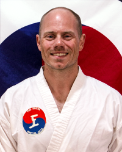
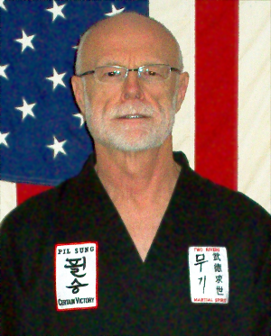
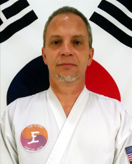
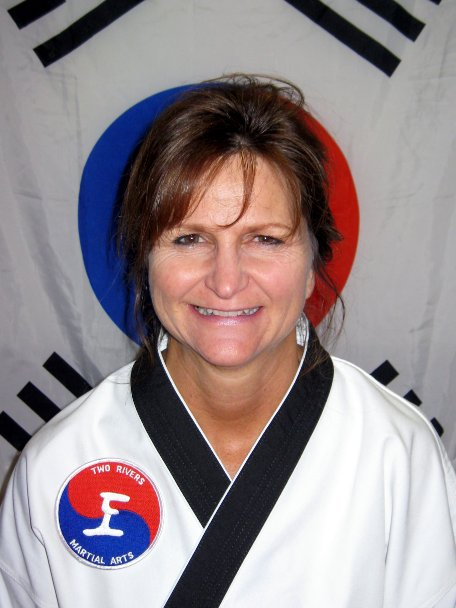
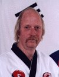
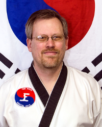
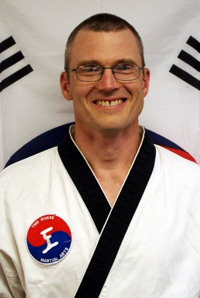
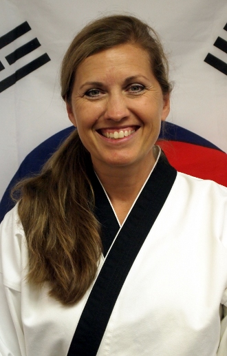
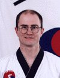

Two Rivers Hub
(& Business Office)
|
trmaweb@tworiversmartialarts.com
(515)423-0804 |
Master Steve Gonzalez
6th Dan |
|
Master Gonzalez started training with Master Heintz in the mid 1980s. He earned his 6th Dan in April 2008. He is one of the primary instructors at the TRMA Hub and is a former President and Vice President of the TRMA Board of Directors. Master Gonzalez is the director of the annual Pil Sung tournament. |
Master Brad Deaton
6th Dan |
|
Master Deaton began training with Master Heintz in 1986. Master Deaton earned his 6th Dan in
August 2011. He is currently one of the primary instructors at the TRMA Hub.
He is a current member of the Board of Directors and is a former President and former Vice-President of the Board of Directors.
|
Master Anita Williams
6th Dan |
|
Master Williams began training with Master Heintz in 1987 and earned her 6th Dan
in August 2011. She is one of the primary instructors at the TRMA Hub and
is a former President and former Secretary of the TRMA Board. |
Master Dwayne Ferguson
6th Dan |
|
Master Ferguson began training with Master Heintz in 1989 and earned his 6th Dan in August 2011. He is one of the primary instructors at the TRMA Hub and is the current Treasurer and a former President of the TRMA Board of Directors. |
Master Bryan Siever
5th Dan |

|
Master Siever began training with Master Heintz in the spring of 1993. He earned his 5th Dan in December of 2014. Master Siever is one of the primary instructors at the TRMA Hub as well a former President, a former Secretary and a current member of the TRMA Board. |
Mr. Lance Kinseth
|

|
Mr. Kinseth began training with Master Heintz in 1983 and has taught taekwondo at various branches and at the Hub. He has over 45 years experience in a variety of martial arts, with particular emphasis upon taekwondo, kumdo and jodo. He is the instructor for the Martial Spirit class that integrates a broad variety of martial arts. |
Ms. Rochelle Douglass
3rd Dan |
|
Ms. Douglass began training in 2005 with Iowa Methodist Tae Kwon Do. Ms. Douglass earned her 3rd Dan in April 2015 through TRMA. She is one of the primary instructors at the TRMA Hub and is a past Vice-President of the TRMA Board of Directors. |
Mr. Dave Nelson
1st Dan |

|
Mr. Nelson started with Two Rivers Tae Kwon Do in August of 2010.
He is currently a 1st Dan Black Belt, and teaches at the TRMA Hub branch.
|
Carlisle Branch
|
carlisle@tworiversmartialarts.com
(515)957-1191 |
Ms. Morgan Endecott
3rd Dan |
 |
Ms. Endecott began training with Two Rivers in 2006
and earned her 3rd Dan in April 2015. She is one of
the primary instructors for the Carlisle Branch, and is a member of the TRMA Board of Directors and
is a former Secretary of the Board.
|
Ms. Vickie Hornback
2nd Dan |
|
Ms Hornback began her training at Two Rivers Martial Arts in 2009.
She is currently one of the primary instructors at the school's
Carlisle location and is a member of the TRMA Board of Directors. She is a
former Secretary and former Vice-President of the TRMA Board of Directors. Ms. Hornback is also an instructor for the Black Belt Youth Group.
|
Indianola Branch
|
indianola@tworiversmartialarts.com
|
Master Marvin Samuelson
6th Dan |

|
Master Samuelson began training with Master Heintz in the early 1980s and earned his 6th Dan in April 2008. He is the primary instructor for the Indianola Branch. He is a
former President, and former Vice-President of the TRMA Board of Directors. |
Master Roger Netsch
5th Dan |
|
Master Netsch began his training with Two Rivers and earned his 5th Dan in December 2014. He teaches at the Indianola Branch and is the current President of the TRMA Board of Directors. He is also a former President and former Vice President of the TRMA Board of Directors. |
Mr. Brian Anderson
4th Dan |

|
Mr. Anderson began training in December 2003 and earned his 4th Dan in December 2015. He is the current
Secretary of the Board of Directors |
Pleasant Hill Branch
|
pleasanthill@tworiversmartialarts.com
(515)412-0502 |
Mr. Michael Cummings
2nd Dan |

|
Mr. Cummings started practicing Tae Kwon Do with Eric Heintz Black
Belt Academy in 1993 and has stopped several times over the years.
In 2004 he started again with his son at Two Rivers Martial Arts
and as of now he is a 2nd Dan black belt and an instructor
at the Pleasant Hill Branch. |
Ms. Melinda Adamson
2nd Dan |

|
Ms. Adamson began her training in the 1980's at
Kim's Academy. Her love for TKD didn't end there.
She began her journey again with Two Rivers
Martial Arts June 19, 2008 after her son and
husband found the love for Tae Kwon Do.
She earned her 2nd Dan with
TRMA April 20, 2013. She is currently on of the
instructors at the Two Rivers Pleasant Hill branch.
|
Mr. Gerry Wilwerding
2nd Dan
|
|
Mr. Wilwerding began and continues his training at Two Rivers' Pleasant Hill branch and earned his 2nd Dan in August 2014. He enjoys the physical activities and expanded sense of community that TRMA brings to its students.
|
West Des Moines Branch
|
wdm@tworiversmartialarts.com
(515)650-3808 |
Ms. Jennifer Bailey
3rd Dan |
|
Ms. Bailey began training with Two Rivers in 2008 and earned her 3rd Dan in April 2015. She is one of the primary instructors for the West Des Moines Branch and is the current Vice President, a former President, and former Secretary of the TRMA Board of Directors. |
Mr. Rob Dale
2nd Dan |
|
Mr. Dale began training with Two Rivers in 2010 and earned his 2nd Dan in December 2014. He is one of the primary instructors for the West Des Moines Branch.
|
Mr. Kendall Bailey
2nd Dan |
|
Mr. Bailey began training with Two Rivers in 2010 and earned his 2nd Dan in December 2015. He is one of the primary instructors for the West Des Moines Branch and manages the information technology needs of TRMA. |
Winterset Branch
|
winterset@tworiversmartialarts.com |
Master Brett McBroom
7th Dan |

|
Master McBroom began training with Master Heintz in the early 1980s. He is one of the primary instructors at the Winterset Branch and a former President and former Vice President of the TRMA Board of Directors. He tested for 7th Dan in December 2014. |
Master Tony Maxwell
6th Dan |
|
Master Maxwell began training with Master Heintz in the early 1980s and earned his 6th Dan in April 2008. He has been one of the primary instructors for the Winterset Branch for over a decade and a former President of the TRMA Board of Directors. |
Master Jayne Maxwell
6th Dan |
|
Master Maxwell began training with Master Heintz in the early 1980s and earned her 6th Dan in August 2011. She is one of the primary instructors for the Winterset Branch. |